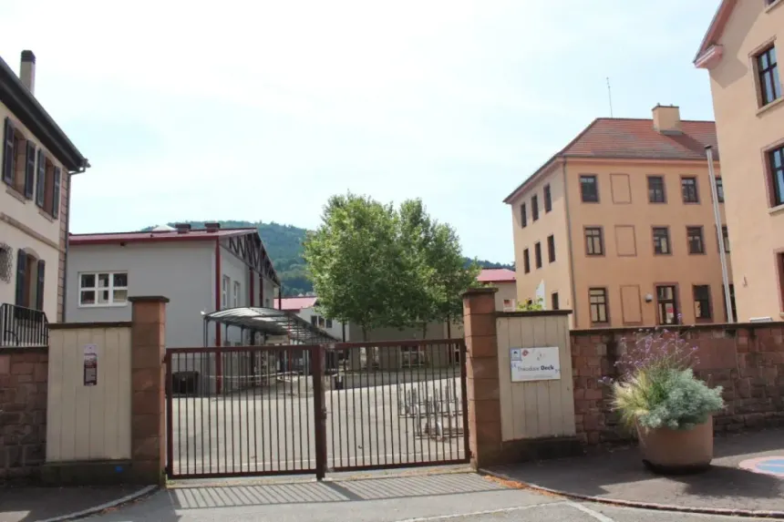

Lycée Théodore Deck, Guebwiller
Obtained in 2025 at the Lycée Théodore Deck in Guebwiller. French baccalaureate with two technical specialisations: NSI (Digital and Computer Science) and Mathematics. This path gave me solid foundations in programming, algorithms and understanding of computer networks, directly preparing me for the BUT R&T program.

Overall results
Detailed results
Specialisations taken
💻 NSI — Digital & Computer Science
Python programming, data structures (linked lists, trees, graphs), SQL databases, network architectures, Internet protocols (TCP/IP), IT security, HTML/CSS/JavaScript. Object-oriented programming paradigms.
📐 Mathematics
Linear algebra, sequences and functions, conditional probability, continuous probability distributions. Introduction to algorithms with Python to solve complex mathematical problems.
⚡ Physics-Chemistry (Year 12 only)
Organisation and transformations of matter, motion and interactions, energy conversions, waves and signals. Taken until Year 12 then dropped in Year 13 to focus on NSI.
Grand Oral — 20/20
🎤 Subject presented
The Grand Oral is a 20-minute oral examination combining both specialisations. Maximum score of 20/20 achieved through rigorous preparation and a confident presentation linking NSI and Mathematics.
- 20-minute presentation before a jury of two examiners
- Demonstration of argumentation and synthesis skills
- Link established between the two chosen specialisations